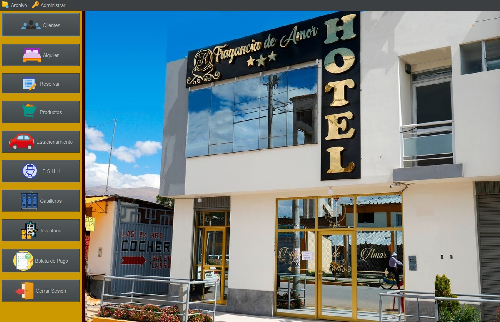

Bienvenido a mi
Portafolio Electrónico
COLONIO GONZALES
Piero Luigi
Bienvenida e Introducción
¡Bienvenidos a mi portafolio electrónico! Soy estudiante de Ingeniería de Sistemas y este portafolio representa una cuidada selección de mis proyectos más destacados, especialmente enfocados en el curso de Desarrollo de Aplicaciones Web.
Comprendo la importancia de contar con un portafolio electrónico para complementar mi formación académica. Este espacio se convierte en una poderosa herramienta para mostrar mis habilidades y conocimientos en el campo del desarrollo web.
A través de los proyectos que encontrarás aquí, podrás apreciar cómo he aplicado los conocimientos adquiridos durante el curso de Desarrollo de Aplicaciones Web. Desde la implementación de tecnologías de vanguardia hasta la creación de interfaces interactivas y funcionales, cada proyecto refleja mi dedicación y comprensión de los conceptos fundamentales impartidos en este curso.
Tabla de contenido
Información sobre mí
2019 - 2024
Resumen personal
Soy estudiante de noveno semestre de la Facultad de Ingeniería de Sistemas con una fuerte pasión por la tecnología y la resolución de problemas. Durante mi tiempo en la universidad, he adquirido conocimientos sólidos en áreas como programación, desarrollo web y gestión de bases de datos, también he participado en proyectos estudiantiles desafiantes que han ampliado mi comprensión práctica de los sistemas informáticos.
2019 - 2024
Experiencia relevante
Durante mi tiempo como practicante en "Leidy Inmobiliaria", tuve el privilegio de ser parte del equipo que trabajó en la mejora de la eficiencia operativa de la empresa, mi principal contribución fue el diseño y la implementación exitosa de un sistema de gestión de inventarios, mis responsabilidades incluyeron la evaluación de las necesidades de inventario de la empresa, la identificación de áreas de mejora y la creación de un sistema personalizado.
2019 - 2024
Contribuciones relevantes
Durante mi tiempo como practicante en la empresa "Leidy Inmobiliaria", contribuí con el diseño y la implementación de un sistema de gestión de inventarios personalizado que mejoró la eficiencia operativa y redujo costos, además, también fui parte del desarrollo exitoso de un sistema de gestión de alquiler de habitaciones para el hotel "Fragancia de Amor", optimizando el proceso de alquiler y mejorando la experiencia del cliente.
2019 - 2024
Educación
Actualmente, estoy completando mi educación en la Universidad Nacional del Centro del Perú (UNCP), una institución líder en la región que se dedica a la excelencia académica y la formación integral, en la UNCP, estoy estudiando en la prestigiosa facultad de Ingeniería de Sistemas que ha fortalecido mis habilidades en áreas cruciales como programación, análisis de datos y diseño de sistemas informáticos.
2019 - 2024
Conjunto de habilidades
A lo largo de mi trayectoria académica y experiencias prácticas, he desarrollado una sólida base de habilidades que me han preparado para enfrentar los desafíos en el campo de la Ingeniería de Sistemas.
2019 - 2024
Información de Contacto
Celular: +51 936080014
Correo electrónico: pierolcg@gmail.com
Dirección: Av. Tahuantinsuyo #385 - El Tambo
Sitio Web: Próximamente...
Trabajos realizados

Diseño y desarrollo de Sistema de Gestión Hotelero
Se diseñó y desarrolló un sistema de administración para el hotel "Fragancia de Amor", facilitando la gestión de reservas, registro de huéspedes y seguimiento de la ocupación. Con una interfaz intuitiva y funcionalidades avanzadas, el sistema optimiza los procesos operativos del hotel, brindando una experiencia eficiente y satisfactoria tanto para el personal como para los clientes.
Conclusión
Durante el primer consolidado de la asignatura de desarrollo de aplicaciones web, se ha logrado realizar avances significativos. En términos de HTML y CSS, hemos aprendido a crear páginas web con un diseño responsivo, lo cual implica que se adaptan de manera óptima a diferentes dispositivos y tamaños de pantalla. Además, hemos adquirido conocimientos en JavaScript, lo que nos ha permitido animar objetos y elementos en páginas web, brindándoles interactividad y dinamismo. También hemos explorado el uso de Canvas, lo cual nos proporcionó la capacidad de dibujar objetos y figuras. Por último, pero no menos importante, hemos incursionado en el mundo de Node.js, aprendiendo a desarrollar aplicaciones web que se ejecutan en el lado del servidor. En general, los resultados obtenidos en este primer consolidado han sido satisfactorios y nos brindan suficiente motivación para continuar con el aprendizaje, con dedicación y esfuerzo.
Durante el segundo consolidado de mi aprendizaje en desarrollo web, avanzé significativamente en
varias áreas clave. Empecé dominando el uso de Hooks en React para mejorar la gestión del estado y
los efectos en mis aplicaciones front-end, lo que hizo mis componentes más eficientes y
reutilizables. Luego, exploré Next.js para desarrollar aplicaciones web optimizadas, mejorando el
rendimiento y la visibilidad en motores de búsqueda.
En el ámbito del desarrollo back-end, adquirí habilidades en Java EE, Servlets y Apache Tomcat,
implementando el patrón MVC para construir aplicaciones web empresariales robustas. Finalmente,
consolidé mis conocimientos al desarrollar una API y participar en una evaluación final, demostrando
mi capacidad para aplicar conceptos complejos en proyectos prácticos y evaluativos.
Este periodo no solo expandió mis habilidades técnicas, sino que también me preparó para enfrentar
desafíos más complejos en el desarrollo de software, consolidando mi comprensión integral del
desarrollo web moderno.
Reflexión
Semana 01
¿Qué aprendí?
Durante mi proceso de aprendizaje en tecnología web, he aprendido sobre las diversas
tecnologías, herramientas y roles en el desarrollo de aplicaciones web. También he adquirido
conocimientos sobre diseño de experiencia de usuario y diseño de interfaz de usuario, y su
importancia en el desarrollo exitoso de aplicaciones web.
¿Cómo aprendí?
Aprendí utilizando un enfoque metacognitivo, reflexionando sobre mis estrategias de
aprendizaje y buscando activamente conocimientos relevantes a través de investigación,
estudio y exploración. También apliqué principios de diseño, técnicas de investigación de
usuarios y prototipado para mejorar la calidad y usabilidad de las aplicaciones web. Mi
enfoque constante en la metacognición me permitió adaptarme a los cambios y mejorar mi
capacidad para adquirir y aplicar nuevos conocimientos.
Semana 02
¿Qué aprendí?
A lo largo de mi proceso de aprendizaje en el ámbito de la tecnología web, he adquirido
conocimientos acerca de diversas tecnologías, herramientas y funciones relacionadas con el
desarrollo de aplicaciones web. Asimismo, he obtenido comprensión sobre la importancia del
diseño de experiencia de usuario y de interfaz de usuario para el desarrollo exitoso de
aplicaciones web.
¿Cómo aprendí?
He adquirido conocimientos mediante la aplicación de un enfoque metacognitivo, reflexionando
sobre las estrategias que empleo para aprender y procurando activamente información
pertinente a través de la investigación, el estudio y la exploración. Además, he puesto en
práctica principios de diseño, técnicas de investigación de usuarios y la creación de
prototipos con el objetivo de mejorar la calidad y usabilidad de las aplicaciones web. Mi
dedicación constante a la metacognición ha posibilitado mi capacidad para adaptarme a los
cambios y mejorar mi habilidad para asimilar y aplicar nuevos conocimientos.
Semana 03
¿Qué aprendí?
Durante esta semana aprendí el uso de CSS para poder dar diseño a las páginas web que
desarrolladores,
también aprendí del uso de herramientas com Tailwind y Bootstrap y su papel importante en el
diseño
y darle estilos a las páginas que cree.
¿Cómo aprendí?
Para adquirir estos conocimientos, seguí un enfoque práctico y de autodidacta, realicé
ejercicios y prácticas para implementar los conceptos aprendidos, además, consulté recursos
en línea, como documentación y tutoriales, para ampliar mi comprensión y resolver dudas,
aproveché la disponibilidad de recursos digitales y la comunidad en línea para acceder a
información actualizada y compartir conocimientos con otros desarrolladores, a través de
este proceso de aprendizaje activo y continuo logrando aprender más acerca de éstas
herramientas
que facilitan la forma de darle estilo a las diferentes páginas web que realice.
Semana 04
¿Qué aprendí?
Durante esta semana, aprendí sobre JavaScript, eventos, manipulación del DOM y validación de
formularios, adquirí conocimientos sobre el lenguaje de programación JavaScript y su papel
en la creación de interactividad y dinamismo en las páginas web, también exploré cómo
utilizar eventos para responder a las acciones del usuario, manipular el DOM para cambiar
contenido y estilos, y validar formularios para asegurar datos correctos.
¿Cómo aprendí?
Para adquirir estos conocimientos, seguí un enfoque práctico y de autodidacta, realicé
ejercicios y prácticas para implementar los conceptos aprendidos, además, consulté recursos
en línea, como documentación y tutoriales, para ampliar mi comprensión y resolver dudas,
aproveché la disponibilidad de recursos digitales y la comunidad en línea para acceder a
información actualizada y compartir conocimientos con otros desarrolladores, a través de
este proceso de aprendizaje activo y continuo, logré mejorar mis habilidades en el
desarrollo web con JavaScript.
Semana 05
¿Qué aprendí?
Aprendí cómo utilizar el elemento canvas de HTML5 junto con JavaScript para dibujar gráficos
y crear animaciones en una página web, aprendí a dibujar formas básicas como líneas,
rectángulos y círculos utilizando los métodos proporcionados por el elemento canvas, también
aprendí a crear animaciones utilizando el método setInterval() para actualizar el dibujo en
intervalos regulares, además, aprendí sobre el contexto de dibujo, las coordenadas en el
canvas y cómo utilizar transformaciones para aplicar rotaciones, escalas y traslaciones a
los dibujos.
¿Cómo aprendí?
Aprendí estos temas mediante la investigación y el estudio de recursos en línea, como
documentación oficial, tutoriales y ejemplos prácticos, también utilicé ejercicios y
proyectos prácticos para aplicar lo aprendido y fortalecer mi comprensión de los conceptos,
exploré diferentes ejemplos de código y realicé experimentos propios para entender cómo
funcionaba el elemento canvas y cómo utilizarlo para dibujar gráficos y animaciones, además,
reflexioné sobre mis conocimientos previos sobre HTML y JavaScript para establecer
conexiones y ampliar mi comprensión de estas tecnologías.
Semana 06
¿Qué aprendí?
Aprendí a crear componentes en React, que son unidades independientes y reutilizables de la
interfaz de usuario que encapsulan la lógica y la presentación de una parte de la
aplicación, también aprendí a utilizar el estado en React para representar la información
relevante de un componente en un momento dado, por otro lado conocí la importancia de las
herramientas y bibliotecas disponibles en el para facilitar el desarrollo y el mantenimiento
de aplicaciones, conocí la unidireccionalidad en React, donde los datos fluyen en una sola
dirección lo que facilita la comprensión y el mantenimiento.
¿Cómo aprendí?
Aprendí sobre el enfoque declarativo y la unidireccionalidad en React a través de la lectura
de documentación oficial, así como de tutoriales y ejemplos prácticos. Exploré ejemplos de
código que demostraban cómo React simplifica la creación de interfaces de usuario al
permitirnos pensar en términos de componentes y estados. También realicé ejercicios
prácticos donde pude experimentar con la creación de componentes declarativos en React y
observar cómo los cambios en el estado afectaban automáticamente la representación de la
interfaz de usuario.
Semana 07
¿Qué aprendí?
Aprendí a dar estilos a los diferentes componentes de React.JS e hicimos un proyecto donde
expusimos y aprendimos más acerca de las pasarelas y la monetización de las páginas web que
creemos.
¿Cómo aprendí?
Investigué diferentes foros y leí la dcumentación del uso de la API de la pasarela de pagos
que me tocaba realizar con mis compañeros, realizamos una página para poder aplicar la
pasarela de
pagos y a la par realizamos otra página web para mandarlo a GoogleAdSense para realizar la
monetización de ésta página.
Semana 08
¿Qué aprendí?
Semana dedicada a la evaluación.
¿Cómo aprendí?
Mi aprendizaje se centró en la aplicación y demostración de los conocimientos y habilidades
adquiridos hasta ese momento, me sometí a una evaluación que me permitió aplicar lo
aprendido y demostrar mi comprensión de los temas abordados anteriormente.
Semana 09
¿Qué aprendí?
Semana dedicada a la confirmación de notas.
¿Cómo aprendí?
En esta semana se consolidaron las notas y se concluyó con la revisión de los proyectos.
Semana 10
¿Qué aprendí?
Esta semana, aprendí a usar Hooks en React, lo que transformó significativamente la forma en
que manejo el estado y los efectos secundarios en mis componentes. Los Hooks simplifican el
código, hacen que los componentes sean más reutilizables y permiten una mayor modularidad y
facilidad de pruebas.
¿Cómo aprendí?
Mi aprendizaje fue principalmente práctico, integrando Hooks en mi proyecto React y viendo
cómo simplificaban mi código y mejoraban la reutilización de componentes. También estudié la
documentación oficial de React sobre Hooks y consulté varios tutoriales y recursos en línea
para entender mejor cómo usarlos de manera efectiva.
Semana 11
¿Qué aprendí?
Esta semana, aprendí a usar Next.js para desarrollar aplicaciones de alto rendimiento y
optimizadas para motores de búsqueda. También adquirí experiencia en la gestión de archivos
en aplicaciones web, un tema crucial en el desarrollo web moderno.
¿Cómo aprendí?
Mi aprendizaje se basó principalmente en la práctica, trabajando en el proyecto Complementé
esto con la documentación oficial de Next.js y otros recursos en línea para comprender a
fondo cómo implementar las características de Next.js y solucionar los problemas que
surgieron durante el desarrollo.
Semana 12
¿Qué aprendí?
Aprendí a instalar y configurar Java Development Kit (JDK), MySQL y Apache Tomcat,
realizando ejercicios prácticos que incluyeron la descarga y configuración de cada
herramienta. Este proceso me permitió familiarizarme con la verificación de la instalación
de Java, la configuración de la contraseña en MySQL para hacer la conexión JDBC que se
planteó en uno de los ejercicios y la confirmación del funcionamiento de Tomcat a través de
su interfaz web.
¿Cómo aprendí?
Todo ellos aprendí ejecutando los ejercicios de instalación y configuración, siguiendo las
instrucciones oficiales de los sitios web de Oracle, MySQL y Apache Tomcat.
Semana 13
¿Qué aprendí?
Durante esta semana, he aprendido sobre Apache Tomcat como un servidor web que maneja
páginas estáticas y dinámicas, y sobre JSP como una tecnología que combina Java y HTML para
crear páginas web dinámicas.
También he comprendido los métodos HTTP GET y POST, utilizados para solicitar y enviar datos
al servidor desde aplicaciones web desarrolladas con JSP.
¿Cómo aprendí?
Todo ellos aprendí ejecutando los ejercicios de instalación y configuración, siguiendo las
instrucciones oficiales de los sitios web de Oracle, MySQL y Apache Tomcat.
Semana 14
¿Qué aprendí?
Durante la semana centrada en Jakarta EE y Servlets, adquirí conocimientos esenciales sobre
estas tecnologías clave para el desarrollo de aplicaciones web empresariales en Java.
Aprendí sobre el patrón de diseño Modelo-Vista-Controlador (MVC), que divide una aplicación
en tres componentes principales: el modelo para la lógica de negocio y los datos, la vista
para la interfaz de usuario, y el controlador como intermediario que gestiona las
solicitudes del usuario y actualiza el modelo según sea necesario.
¿Cómo aprendí?
Mi aprendizaje se basó en una combinación de práctica guiada. Utilicé Maven para crear y
gestionar proyectos Java, aprendiendo a configurar y conectar estos proyectos con el
servidor Tomcat, un contenedor servlet popular. Implementé Servlets para manejar solicitudes
HTTP y diseñé rutas y controladores para gestionar interacciones de usuario.
Semana 15
¿Qué aprendí?
Aprendí a crear una API e implementarlo en un proyecto grupal para la evaluación final
del segundo consolidado.
¿Cómo aprendí?
Investigué en diferentes foros web, videos tutoriales de YouTube y preguntando a
conocidos que saben del tema, realicé diferentes prácticas para poder entender mejor en
consumo de APIs y cómo se pueden desarrollar en IntelliJ IDEA.
Semana 16
¿Qué aprendí?
Semana dedicada a la evaluación.
¿Cómo aprendí?
Mi aprendizaje se centró en la aplicación y demostración de los conocimientos y
habilidades adquiridos hasta ese momento, me sometí a una evaluación que me permitió
aplicar lo
aprendido y demostrar mi comprensión de los temas abordados anteriormente.
Reflexión Final
¿Qué aprendí?
Durante mi experiencia de aprendizaje en desarrollo web, he adquirido una serie de
habilidades fundamentales que abarcan tanto el front-end como el back-end. Empecé
dominando CSS y herramientas de estilo como Tailwind y Bootstrap, lo cual me permitió
crear interfaces atractivas y responsivas de manera eficiente. Avancé en JavaScript,
aprendiendo a manipular el DOM, manejar eventos y validar formularios para mejorar la
interactividad de las aplicaciones web.
Exploré a fondo React, donde desarrollé habilidades en la creación de componentes
reutilizables y la gestión efectiva del estado de la aplicación. Este conocimiento me
capacitó para estructurar interfaces de usuario complejas de manera modular y escalable.
Además, me adentré en el desarrollo back-end con Java EE, Servlets y Apache Tomcat,
implementando el patrón MVC para construir aplicaciones web robustas que manejan la
lógica de negocio y la persistencia de datos de manera eficiente.
¿Cómo aprendí?
Mi enfoque de aprendizaje se basó en la práctica autodidacta y la exploración activa de
recursos en línea. Utilicé documentación oficial, tutoriales y ejemplos prácticos para
comprender los conceptos y técnicas necesarias en cada tecnología. A través de proyectos
prácticos y ejercicios, pude aplicar y consolidar lo aprendido, mejorando así mi
comprensión y habilidades en desarrollo web. La colaboración con la comunidad de
desarrolladores en línea fue crucial para resolver dudas y mantenerme actualizado sobre
las mejores prácticas y tendencias emergentes. Este enfoque me ha permitido no solo
adquirir conocimientos técnicos sólidos, sino también desarrollar una capacidad continua
para adaptarme y crecer en un entorno tecnológico en constante evolución.
Bibliografía
Desarrollo web con HTML, CSS y JavaScript

Node.js in Action
Web Development and Design Foundations with HTML5
Desarrollo de aplicaciones con Java. Empresa Editora Macro EIRL primera edición.
Object-Oriented Analysis, Design and Implementation - An Integrated Approach Editorial Springer International, Segunda Edición. Edición Cham Suiza
Análisis y diseño orientado a objetos de sistemas usando uml. Editorial Mc-Graw Hill Tercera Edición.
Análisis y Diseño de Aplicaciones Informáticas de Gestión - Una Perspectiva de Ingeniería de Software. Editorial Alfaomega.
Aprende a Programar APPS CON HTML5, CSS Y JAVASCRIPT Alfaomega Primera Edición
React Architect Full Stack React App Develoment and Serverless Deployment Editorial React-Architect.
Learning Web Design: A Beginner's Guide to HTML, CSS, JavaScript, and Web Graphics